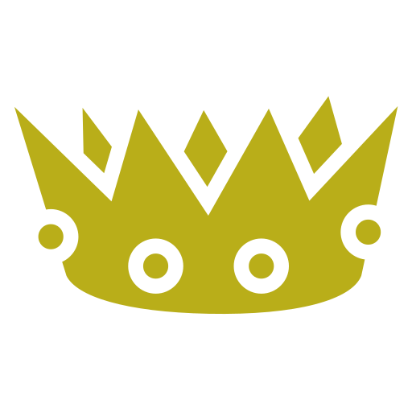

Arbre dynastique
Aide de Jeu
- Economie
Permet une meilleure gestion des finances, d'engranger plus de gains et de diminuer les dépenses.
- Diplomatie
Permet une meilleure gestion des relations intérieures et extérieures au Royaume, de tirer le meilleur parti lors de négociations, et d'être plus populaire après de vos citoyens.
- Militaire
Permet une meilleure gestion de l'armée, être plus efficaces dans les batailles, avoir de meilleures aptitudes en stratégie, et de perfectionner vos défenses.
Vous pouvez obtenir des enfants, soit par mariage, soit par adoption, dans le cas où vous n'en avez pas encore.
Parmi vos enfants se trouve votre héritier. Afin de maximiser les compétences de votre prochain personnage (votre héritier prenant le trône à la mort de l'actuel), il est nécessaire de l'éduquer.
Des évènements permettent d'augmenter les compétences de vos enfants. Mais attention, seul votre héritier vous fera bénéficier de celles-ci. Prenez donc garde à qui vous ferez profiter d'une bonne éducation.
Si votre personnage meurt sans héritier, alors c'est la fin de la partie. Vous devez donc faire tout ce qui est en votre pouvoir pour obtenir un héritier, c'est-à-dire avoir un enfant !
Si vous n'avez qu'un enfant, c'est simple, c'est lui votre héritier. Dans le cas contraire, il existe des règles de priorité d'héritage.
1. Votre premier fils
2. Vos autres fils, dans l'ordre de naissance.
3. Votre première fille.
4. Vos autres filles, dans l'ordre de naissance.
Un enfant adopté compte comme n'importe quel autre enfant, fils ou fille.
 Argent
ArgentDétermine la richesse de votre Royaume, qui finance vos actions. Tombez à 0 et vous subirez le courroux de la Banque Continentale !
 Popularité
PopularitéDétermine le soutien de la population. Tombez à 0 et vous subirez une révolte !
 Armée
ArméeDétermine la puissance de votre armée, qui vous permet de vous défendre contre les menaces et d'entreprendres des actions militaires. Tombez à 0 et vos voisins profiteront de votre faiblesse pour vous envahir !
 Longévité de la dynastie (en années)
Longévité de la dynastie (en années)- Longévité de règne (en années)
- Age du Roi/de la Reine, actuellement
 Age du Roi/de la Reine, à sa mort
Age du Roi/de la Reine, à sa mort
Se marier est essentiel pour obtenir des enfants, et donc, un héritier.
Mais cela ne résume pas la seule fonction de votre époux/se. Il/elle est aussi votre plus proche conseiller(e).
Il/elle vous apporte ses compétences pour vous aider dans vos décisions et inluencer leurs résultats.
Il existe plusieurs types de statistiques.
Les statistiques globales
Ce sont les statistiques régissant votre Royaume. Si l'une d'elles tombe à 0, c'est la fin de la partie.
Il existe ainsi l'or, la popularité et l'armée. Chacune d'entre elles est impactée par vos choix, les augmentant ou les diminuant. A vous de prendre les décisions les plus judicieuses, même si ce ne sont pas forcément les plus honorables et justes.
Enfin, le temps (représenté par un sablier) représente le temps virtuel en années, qui s'est écoulé depuis le début de votre dynastie.
Les statistiques de personnage
Ce sont les compétences de votre personnage ainsi que de votre entourage. Plus celles-ci seront élevées, plus elles influenceront positivement les résultats de vos décisions.
Au cours de la partie, vous pourrez les augmenter via des évènements, mais aussi lorsque une conpétence réussit à influencer une décision. Dans ce cas, un bonus vous est octroyé, et il peut parfois s'agir d'une montée de compétence.
Mais attention, vos compétences ne sont pas les seules à compter ! Celles de votre entourage est aussi pris en compte dans la balance. En effet, votre famille et votre Conseil vous influence... Choisissez donc bien vos Conseillers.
Vous pouvez aussi, lors d'évènements, choisir d'augmenter les compétences de vos enfants. Parmi ceux-ci se trouve votre héritier, et plus vous augmenterez ses compétences, plus vous en bénéficierait lorsqu'il montera sur le trône.
Famille Royale
Votre Roi
Henri I - 18 ans
Compétences
Économie: 5
Diplomatie: 5
Militaire: 5
Votre Epouse
Aucune épouse
-
Vos Enfants
Aucun enfants
Chronicles of a Dynasty
- 100
- 50
- 10
- 0
Un événement aléatoire apparaît ici.
Dynastie
Cour Royale
Vos Conseillers
Aucun conseillers
Hello, world! This is a toast message.